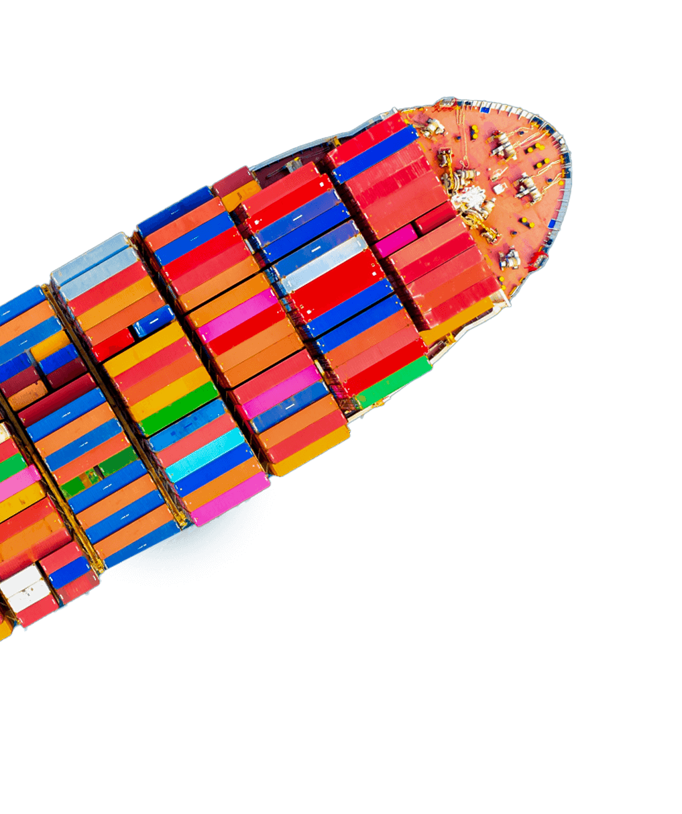
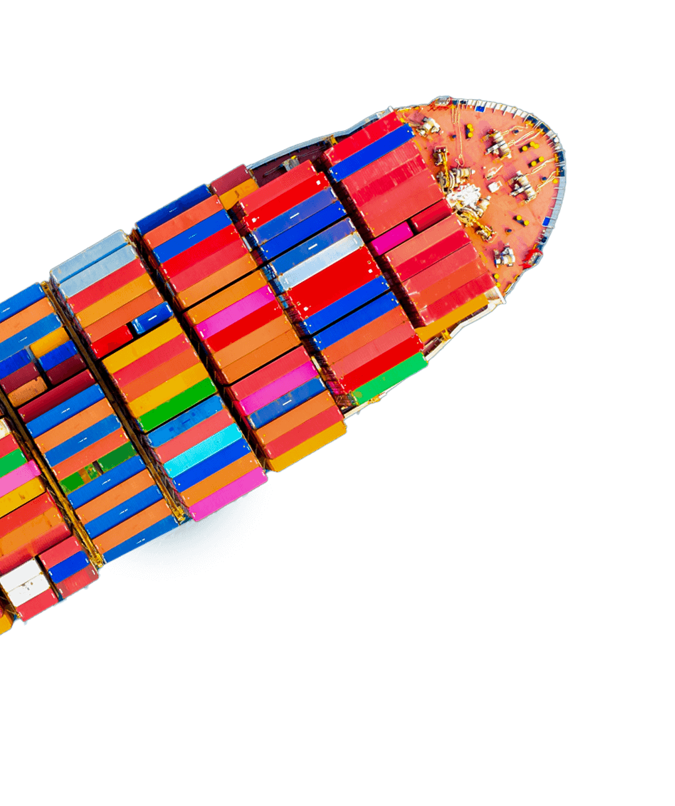

Requerimento de revisão de estimativa
Revisão de estimativa é o procedimento que permite ao declarante de mercadorias demonstrar sua existência e a capacidade financeira através da comprovação de receita bruta, funcionários, entre outras possibilidades.
Se a empresa possui o RADAR (Registro e Rastreamento da Atuação dos Intervenientes Aduaneiros) ativo em determinada submodalidade com valor menor do que precisa para importações, é necessário solicitar a revisão de estimativa a fim de aumentar o limite da habilitação para realizar suas operações no comércio exterior.
Ao obter o enquadramento na submodalidade do Radar é possível fazer a importação com operações superiores.
Fundada em 2002, a Saygo é especializada na inclusão de novas empresas no comércio internacional, fazendo a gestão de toda a cadeia de importação e exportação, oferecendo redução de custos nas operações e consequente aumento do lucro dos clientes.

 

O que é revisão de estimativa?
É o procedimento de comprovação da existência do requerente além da sua capacidade financeira. O objetivo da solicitação do processo de revisão é permitir ao requerente demonstrar sua capacidade para atuar com operações superiores ao concebido na submodalidade do Radar.
Para obter a alteração da submodalidade é necessário a comprovação de receita bruta, funcionários empregados entre outras documentações.
preciso de uma assessoria de comexComo funciona a revisão de estimativa?
A empresa que pretende ingressar no comércio exterior para importar ou exportar mercadorias precisa estar habilitada no Sistema Integrado de Comércio Exterior – Siscomex, seja na modalidade Expressa, Limitada ou Ilimitada. Isso garante a autorização para que a empresa importe ou exporte de modo legalizado.
Por isso, deve habilitar-se junto à Receita Federal através da Habilitação de RADAR (Registro e Rastreamento de Atuação dos Intervenientes Aduaneiros). Para as empresas que estão ingressando no comércio exterior, é importante saber que existem 3 tipos de modalidades no Radar. São elas:
Habilitação Expressa
é para a empresa que não precisa demonstrar capacidade financeira e operacional, com limite de até US$ 50 mil CIF por semestre;
Habilitação Limitada:
é a habilitação indicada que está começando no processo de importação de até US$ 150 mil CIF por semestre;
Habilitação Ilimitada:
indicado para as empresas que desejam atuar com operações superiores a U$ 150.000,00 CIF por semestre.
Caso o valor limite da habilitação estipulado por seis meses seja ultrapassado, o Siscomex não permite o registro de novas Declarações de Importações.
Quando a revisão de estimativa é necessária?
Esse processo é necessário quando a empresa pretende operar com limite superior ao concedido na habilitação limitada. Quando o limite de importação é ultrapassado, o Siscomex impede novas declarações de importações.
Nesse sentido, se a empresa estiver habilitada na submodalidade limitada e precisar da liberação do limite gradualmente, deve apresentar à Receita Federal a comprovação da sua capacidade financeira para aumentar o limite do seu Radar. Logo, a revisão de estimativa de declarante de mercadorias será necessária para solicitar operações com o limite superior ao que foi concedido na modalidade.
O declarante de mercadorias deverá fazer a solicitação perante a Receita Federal comprovando a capacidade financeira. No entanto, os documentos devem ser enviados conforme o enquadramento da empresa, que é determinado dentro das opções apresentadas na Instrução Normativa.
A Saygo atua com os seguintes serviços:

Análise de documentação:
Repassamos aos clientes a lista de documentos necessários para o processo de revisão de estimativa. Analisamos a documentação e apontamos as adequações necessárias para a obtenção da habilitação.
Geração do processo:
Preenchemos todos os formulários necessários para o processo.Geramos o processo, de acordo com a documentação solicitada em cada jurisdição.
Protocolo:
Protocolamos o processo na Receita Federal do Brasil (RFB).Acompanhamos o andamento do processo e realizamos atendimentos a intimações e expedientes presenciais com o fiscal (quando necessário). O
número do protocolo é enviado ao cliente.
Deferimento:
Analisamos o parecer da RFB e encaminhamos para o cliente iniciar suas operações no comércio exterior.
A empresa que deseja atuar com operações superiores ao que foi concebido na habilitação limitada, deverá solicitar o Requerimento de Revisão de Estimativa. Isso pode ser realizado por meio de processo digital e ser dirigido à unidade da RFB de jurisdição aduaneira do domicílio fiscal do declarante de mercadorias.
Embora pareça um processo simples, qualquer documento comprobatório que não for encaminhado, poderá ocasionar atrasos na alteração da submodalidade. Por isso, você pode obter o serviço oferecido pela Saygo, pois todos os processos são analisados e encaminhados para o cliente, o que garante tranquilidade e segurança.